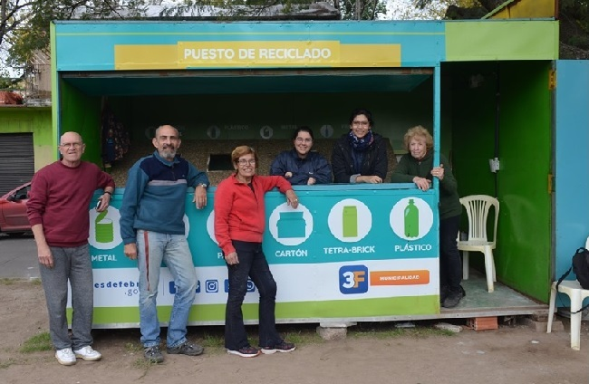

Taller de Huerta
Vamos a realizar el 2do Taller de Huerta Orgánica. Entre lo tópicos mas importantes estaremos abordando: Trasplante-Repique-Preparación del suelo de la huerta-Siembra Directa Cada participante se llevará algunos plantines de la temporada otoño/invierno Lugar: Huerta OASIS (Fredes y Franco) Ciudad Jardin Lomas de Palomar. Comunicate al:1141467105 - 1130837961
Plantación Colegio Militar
Hoy se trabajó duro, se plantaron 11 lapachos rosados apadrinados por vecinos/as de la zona. Además aprovechamos y limpiamos la zona de la plantación. Mucha basura, como siempre.... Muchos preguntan por qué lo hacen? y la verdad las respuestas son muchas pero cuando vemos como el paisaje cambia, cuando los lapachos empiezan a regalarnos sus flores y su sombra, tan solo eso da todas las respuestas. Gracias a los que apadrinaron árboles y no pudieron ir, a los que fueron y compartieron con nosotros este momento y por sobre todo infinitas gracias a los Voluntarios/as de OASIS que nos regalan lo más valioso que tienen que es el tiempo.
22 Día de la Tierra
Hoy más que nunca en el día de la tierra es que queremos que se tome conciencia de la importante labor que hacemos día a día clasificando los materiales reciclables al aire libre expuestos a todo. Hoy más que nunca; como venimos haciendo desde hace años a nivel nacional y municipal; pedimos un espacio para poder trabajar mejor; para poder crecer y en un futuro generar trabajo. Sin un lugar para acopiar es imposible clasificar todos los materiales. Necesitamos que nos escuchen; necesitamos que se ocupen verdaderamente del tratamiento de los Residuos Sólidos Urbanos y que en este tratamiento reconozcan la labor de los que venimos trabajando en esto desde hace años. Agradecemos al CP (Comando de Patrulla) y a todos sus integrantes que tan amablemente nos prestaron su espacio durante algunos meses. Lamentablemente una vez más el reciclado no es prioridad.
Nuestro Trabajo
OASIS está formado por un grupo humano dirigido por Carlos Pérez, y nuestra actividades son diversas y todas orientadas a la solidaridad.
Preparamos huertas orgánicas, jardines, donación de semillas y árboles a escuelas, vecinos e instituciones en general.
Biblioteca: Tenemos más de mil ejemplares de libros de gran utilidad para el estudiante, manuales escolares, libros de áreas y material específico para universitarios. También variedad de bibliografía referida a temas de ecología, medio ambiente y jardinería.
Ropero: Recepción, almacenaje y distribución de ropa y calzado donada por vecinos que se entrega noche a noche en la sede y/o se envía al interior del país por medio de instituciones amigas. También se recepcionan alimentos y medicamentos.
Reciclado: Contamos con varios programas de reciclado para ello acopiamos: tapitas de plástico, envases descartables, papel, aceite vegetal usado, plástico y vidrio.
Forestación: En el transcurso del año llevamos adelante tareas y jornadas de forestación, hemos plantado en el partido más de mil árboles, colaboramos con jardines de infantes, escuelas e instituciones del partido para forestar sus espacios verdes.
Proyectos: Concretamos la primera bici-senda del partido de Tres de Febrero gracias al trabajo mancomunado con vecinos y otras asociaciones.
Capacitación: Realizamos charlas, jornadas y capacitaciones en escuelas, ONG y empresas, abordando distintos tópicos del tema ambiental.
Nuestra Historia
En el año 1995 nace de manera informal la asociación OASIS de la mano de Carlos Pérez, vecino de Barrio Podestá, quien con gran entusiasmo, positivismo y sobre todo buena voluntad, confió en su capacidad para mejorar la situación de aquellos que necesitaban ayuda.
Fue en aquel momento cuando decidió empezar la titánica tarea de crear un espacio de contención que no sólo intentara cubrir necesidades básicas, sino que brindara apoyo emocional ayudando a mejorar la calidad de vida de vecinos y amigos de la zona. Carlos, Jardinero de profesión, tuvo en cuenta el aspecto ecológico, él intuía que había que entrar en acción en beneficio del medio ambiente cuándo aún se hablaba poco y nada del calentamiento global y el efecto invernadero.
Las primeras actividades giraban en torno a salidas culturales, recolección de elementos reciclables, forestación del barrio y otras actividades relacionadas con el deporte.
Con el tiempo y principalmente tras la crisis vivida en el país por el año 2001, las necesidades de los habitantes con menos recursos se fueron acrecentando, lo que prácticamente obligó la creación de una sede donde recibir gente, recibir donaciones y almacenarlas.
Afortunadamente una empresa privada colaboró con el alquiler de un local donde OASIS pudo establecerse y crear diferentes espacios donde se desarrollan actividades muy diversas. En general nuestras principales actividades son Biblioteca, Ropero Comunitario, Reciclado, Forestación y Proyectos varios, como ser la concreción de la bici-senda del partido de Tres de Febrero entre otros.

Nuestra Huerta
Av. Fredes y Av. Franco - Ciudad Jardín Lomas de Palomar
Nuestro Punto de Recolección
De los Geranios y De los Aromos - Ciudad Jardín Lomas de Palomar